Aplikasi
Pasang di layar utama, baca seperti aplikasi.
Tidak lewat Play Store atau App Store: situs ini bisa dipasang langsung dari browser. Setelah terpasang ia terbuka layar penuh, punya ikon sendiri, dan bisa mengirim notifikasi saat briefing pagi terbit.

Pasang Hanif Dossier
Memeriksa apakah browser ini bisa memasang langsung…
Alamat aplikasinya: hanif-dossier.github.io/pasang.html
📱 Android (Chrome)
- Buka alamat di atas di Chrome.
- Ketuk Pasang sekarang, atau menu ⋮ → Tambahkan ke layar utama.
- Ikon daun muncul di layar utama.
🍎 iPhone / iPad (Safari)
- Buka alamat di atas di Safari.
- Ketuk tombol Bagikan (kotak dengan panah ke atas).
- Pilih Tambah ke Layar Utama, lalu Tambah.
💻 Laptop (Chrome / Edge)
- Buka alamat di atas.
- Klik Pasang sekarang, atau ikon pasang ⊕ di ujung kanan bilah alamat.
- Aplikasi terbuka di jendela sendiri.
🔔
Notifikasi briefing & screening
Setelah terpasang, masuk sebagai anggota, buka Pengaturan → Notifikasi, lalu nyalakan saklar perangkat ini. Setiap briefing terunggah (sekitar 06.10 WIB), satu notifikasi mampir ke perangkat ini — berisi kalimat pertama bagian Yang Paling Penting Hari Ini. Di iPhone, notifikasi hanya bekerja kalau dibuka dari ikon di Layar Utama.